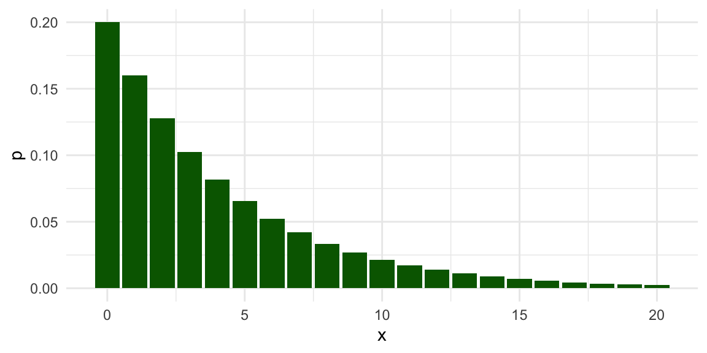
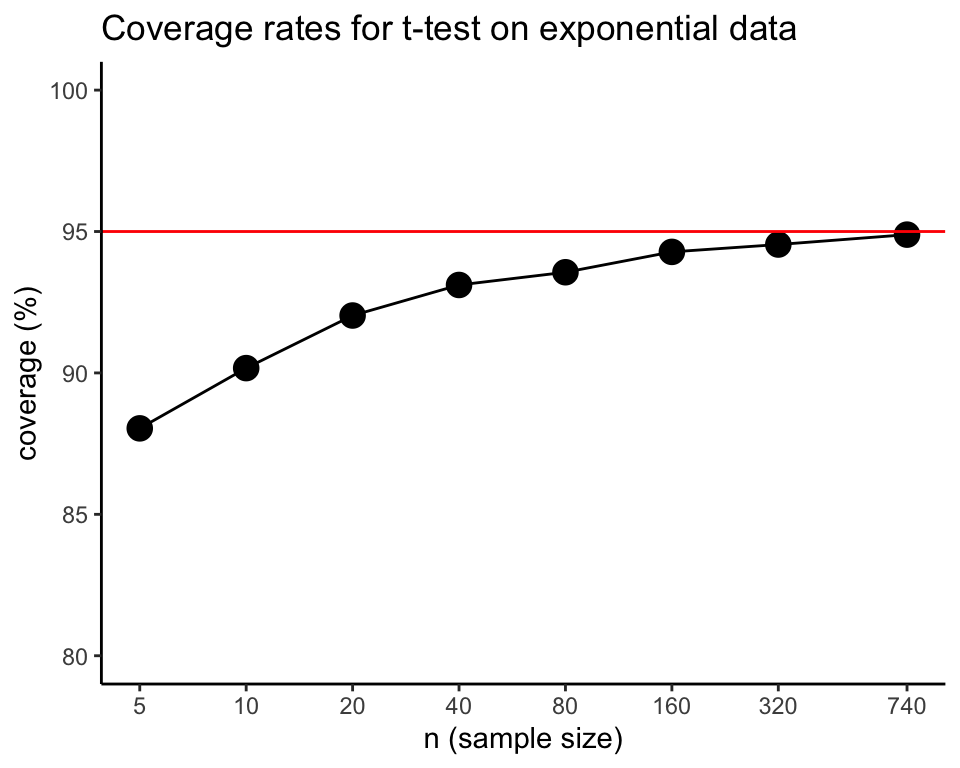

Chapter 3 An initial simulation
We will begin our approach to simulation with a small, concrete example. This example illustrates how simulation involves replicating the data-generating and data-analysis processes, followed by aggregating the results across replications. It thus encapsulates the entirety of Monte Carlo simulation, touching on all the main components involved. In subsequent chapters we will look at each of these components in greater detail, layering on further abstractions and complexity. But first, let us look at a simulation of a very simple statistical problem.
The one-sample \(t\)-test is one of the most basic methods in the statistics literature. It tests a null hypothesis that a population mean of some variable is equal to a specific value by comparing the hypothesized value to a sample average. If the sample average is discrepant (very different) from the null value, then the hypothesis is rejected. The test can also be used to generate a confidence interval for the population mean. If the sample consists of independent observations and the variable is normally distributed in the population, then the confidence interval will have exact coverage, in the sense that 95% intervals will include the population mean in 95 out of 100 tries. But what if the population variable is not normally distributed?
To find out, let us look at the coverage of the \(t\)-test’s 95% confidence interval for the population mean when the method’s normality assumption is violated. Coverage is the chance of a confidence interval capturing the true parameter value. To examine coverage, we will simulate many samples from a non-normal population with a specified mean, calculate a confidence interval based on each sample, and see how many of the confidence intervals cover the known true population mean.
Before getting to the simulation, let’s look at the data-analysis procedure we will be investigating. Here is the result of conducting a \(t\)-test on some fake data:
##
## One Sample t-test
##
## data: dat
## t = 6.0878, df = 9, p-value = 0.0001819
## alternative hypothesis: true mean is not equal to 0
## 95 percent confidence interval:
## 2.164025 4.723248
## sample estimates:
## mean of x
## 3.443636## [1] 2.164025 4.723248
## attr(,"conf.level")
## [1] 0.95We generated data with a true (population) mean of 4. Did we capture it? To check, we can use the findInterval() function, which checks to see where the first number lies relative to the range given in the second argument.
Here is an illustration of the syntax:
## [1] 0## [1] 1## [1] 2If findInterval() returns a 1, that means the confidence interval covers the population mean.
## [1] 1In this instance, findInterval() is equal to 1, which means we got it!
Here is the full code for simulating data, computing the data-analysis procedure, and evaluating the result:
# make fake data
dat <- rnorm( n = 10, mean = 4, sd = 2 )
# conduct the test
tt <- t.test( dat )
# evaluate the results
tt$conf.int## [1] 1.810723 5.157441
## attr(,"conf.level")
## [1] 0.95## [1] TRUEThe above code captures the basic form of a single simulation trial: make the data, analyze the data, decide how well we did.
In general, mucking about to figure out what a single iteration might look like, as we just did, helps us figure out the procedure we plan on simulating.
It also allows us to test and develop our code in an interactive, exploratory fashion; consider how we played with findInterval() to figure out how to use it to determine whether our confidence interval captured the truth.
Once we have gotten a working iteration down, we are in a good position to start writing our actual simulation, which is what we will do next.
3.1 Simulating a single scenario
We next estimate the coverage of the confidence interval by repeating the data-generating and data-analysis processes many, many times.
R’s replicate() function is a handy way to repeatedly call a line of code.
Its first input argument is n, the number of times to repeat the calculation, followed by expr, which is one or more lines of code to be called.
We can use replicate to repeat our simulation process 1000 times in a row, each time generating a new sample of 10 observations from a normal distribution with mean of 4 and a standard deviation of 2.
For each replication, we store the result of using findInterval() to check whether the confidence interval includes the population mean of 4.
rps <- replicate( 1000, {
dat <- rnorm( n = 10, mean = 4, sd = 2 )
tt <- t.test( dat )
findInterval( 4, tt$conf.int )
})
head(rps, 20)## [1] 1 1 1 1 1 1 2 1 1 1 1 1 1 1 1 1 1 1 1 1To see how well we did, we can look at a table of the results stored in rps and calculate the proportion of replications that the interval covered the population mean:
## rps
## 0 1 2
## 27 957 16## [1] 0.957We got about 95% coverage, which is good news. In 27 out of the 1000 replications, the interval was too high (so the population mean was below the interval) and in 16 out of the 1000 replications, the interval was too low (so the population mean was above the interval).
It is important to recognize that this set of simulations results, and our coverage rate of 95.7%, itself has some uncertainty in it. Because we only repeated the simulation 1000 times, what we really have is a sample of 1000 independent replications, out of an infinite number of possible simulation runs. Our coverage of 95.7% is an estimate of what the true coverage would be, if we ran more and more replications. The source of uncertainty of our estimate is called Monte Carlo simulation error (MCSE). We can actually assess the Monte Carlo simulation error in our simulation results using standard statistical procedures for independent and identically distributed data. Here we use a proportion test to check whether the estimated coverage rate is consistent with a true coverage rate of 95%:
##
## 1-sample proportions test with continuity
## correction
##
## data: sum(covered) out of length(covered), null probability 0.95
## X-squared = 0.88947, df = 1, p-value =
## 0.3456
## alternative hypothesis: true p is not equal to 0.95
## 95 percent confidence interval:
## 0.9420144 0.9683505
## sample estimates:
## p
## 0.957The test indicates that our estimate is consistent with the possibility that the true coverage rate is 95%, just as it should be. Things working out should hardly be surprising. Mathematical theory tells us that the \(t\)-test is exact for normally distributed population variables, and we generated data from a normal distribution. In other words, all we have found is that the confidence intervals follow theory when the assumptions of the method are met.
3.2 A non-normal population distribution
We next look at a scenario where the population variable follows a geometric distribution to see what happens when the normality assumption is violated. The geometric distribution is usually written in terms of a probability parameter \(p\), so that the distribution has a mean of \((1 - p) / p\). We will use a geometric distribution with a mean of 4 by setting \(p = 1/5\). Here is the population distribution of the variable: 
The distribution is highly right-skewed, which suggests that the normal confidence interval might not work very well.
Now let’s revise our previous simulation code to use the geometric distribution:
rps <- replicate( 1000, {
dat <- rgeom( n = 10, prob = 1/5)
tt <- t.test( dat )
findInterval( 4, tt$conf.int )
})
table( rps )## rps
## 0 1 2
## 8 892 100Our confidence interval is often entirely too low (such that the population mean is above the interval) and very rarely does our interval fall fully above the population mean. Furthermore, our coverage rate is not the desired 95%:
## [1] 0.892To take account of Monte Carlo error, we will again do a proportion test. The following test result calculates a confidence interval for the true coverage rate under the scenario we are examining:
##
## 1-sample proportions test with continuity
## correction
##
## data: sum(covered) out of length(covered), null probability 0.95
## X-squared = 69.605, df = 1, p-value <
## 2.2e-16
## alternative hypothesis: true p is not equal to 0.95
## 95 percent confidence interval:
## 0.8707042 0.9102180
## sample estimates:
## p
## 0.892Our coverage is too low; the confidence interval based on the \(t\)-test misses the the true value more often than it should. We have learned that the \(t\)-test can fail when given non-normal (skewed) data.
3.3 Simulating across different scenarios
So far, we have looked at coverage rates of the confidence interval under a single, specific scenario, with a sample size of 10, a population mean of 4, and a geometrically distributed variable. We know from statistical theory (specifically, the central limit theorem) that the confidence interval should work better if the sample size is big enough. But how big does it have to get? One way to examine this question is to expand the simulation to look at several different scenarios involving different sample sizes. We can think of this as a one-factor experiment, where we manipulate sample size and use simulation to estimate how confidence interval coverage rates change.
To implement such an experiment, we first write our own function that executes the full simulation process for a given sample size:
ttest_CI_experiment = function( n ) {
rps <- replicate( 1000, {
dat <- rgeom( n = n, prob = 1/5) # simulate data
tt <- t.test( dat ) # analyze data
findInterval( 4, tt$conf.int ) # evaluate coverage
})
coverage <- mean( rps == 1 ) # summarize results
return(coverage)
}The code inside the body of the function is identical to what we have used above, with the sample size as a function argument, n to enable us to easily run the code for different sample sizes.
With our function in hand, we can now run the simulation for a single scenario just by calling it:
## [1] 0.885Even though the sample size is still n = 10, the simulated coverage rate is a little bit different from what we found previously.
That is because there is some Monte Carlo error in each simulated coverage rate.
Our task is now to use this function for several different values of \(n\). We could just do this by copy-pasting and changing the value of n:
## [1] 0.922## [1] 0.91## [1] 0.914However, this will quickly get cumbersome if we want to evaluate many different sample sizes.
A better approach is to use a mapping function from the purrr package.3
The map_dbl() function takes a list of values and calls a function for each value in the list.4
This accomplishes the same thing as using a for loop to iterate through a list of items (if you happen to be familiar with these), but is more succinct.
We first create a list of sample sizes to test out:
Now we can use map_dbl() to evaluate the coverage rate for each sample size:
We advocate for depicting simulation results graphically. To do so, we store the simulation results in a dataset and then create a line plot using a log scale for the horizontal axis:
res <- data.frame(
n = ns,
coverage = 100 * coverage_est
)
ggplot( res, aes( x = n, y = coverage ) ) +
geom_hline( yintercept=95, col="red" ) +
# A reference line for nominal coverage rate
geom_line() +
geom_point( size = 4 ) +
scale_x_log10( breaks = ns, minor_breaks = NULL) +
labs(
title="Coverage rates for t-test on exponential data",
x = "n (sample size)",
y = "coverage (%)"
) +
coord_cartesian(xlim = c(9,320), ylim=c(85,100), expand = FALSE) +
theme_minimal()
We can see from the graph that the confidence interval’s coverage rate improves as sample size gets larger. For sample sizes over 100, the interval appears to have coverage quite close to the nominal 95% level. Although the general trend is pretty clear, the graph is still a bit messy because each point is an estimated coverage rate, with some Monte Carlo error baked in.
3.4 Extending the simulation design
So far, we have executed a simple simulation to assess how well a statistical method works in a given circumstance, then expanded the simulation by running a single-factor experiment in which we varied the sample size to see how the method’s performance changes. In our example, we found that coverage is below what it should be for small sample sizes, but improves for sample sizes in the 100’s.
This example captures all the major steps of a simulation study, which we outlined at the start of Chapter 1. We generated some hypothetical data according to a fully-specified data-generating process: we did both a normal distribution and a geometric distribution, each with a mean of 4. We applied a defined data-analysis procedure to the simulated data: we used a confidence interval based on the \(t\) distribution. We assessed how well the procedure worked across replications of the data-generating and data-analysis processes, in this case focusing on the coverage rate of the confidence interval. After creating a function to implement this whole process for a single scenario, we investigated how the performance of the confidence interval changed depending on sample size.
In simulations of more complex models and data-analysis methods, some or all of the steps in the process might have more moving pieces or entail more complex calculations. For instance, we might want to compare the performance of different approaches to calculating a confidence interval. We might also want to examine how coverage rates are affected by other aspects of the data-generating process, such as looking at different population mean values for the geometric distribution—or even entirely different distributions. With such additional layers of complexity, we will need to think systematically about each of the component parts of the simulation. In the next chapter, we introduce an abstract, general framework for simulations that is helpful for guiding simulation design and managing all the considerations involved.
3.5 Exercises
The simulation function we developed in this chapter uses 1000 replications of the data-generating and data-analysis process, which leads to some Monte Carlo error in the simulation results. Modify the
ttest_CI_experiment()function to make the number of replications an input argument, then re-run the simulation and re-create the graph of the results with \(R=10,000\) or even \(R=100,000\). Is the graph more regular than the one in the text, above? Use your improved results to determine what sample size is large enough to give coverage of at least 94% (so only 1% off of desired).Repeat the one-factor simulation, but use \(p = 1/10\) so that the population mean is \((1 - p) / p = 9\). How do the coverage rates change?
Modify the
ttest_CI_experiment()function so that it returns adata.framewith the estimated coverage rate and the lower and upper end-points of a 95% confidence interval for the true coverage rate (you can useprop.test()to obtain this, treating your \(R\) simulation replicates of the 0/1 indicator of capturing the truth as a random sample). Re-run the simulations with the modified function, obtaining a data frame with each row being a simulation scenario with columns of sample size, estimate of coverage, low end of the estimate’s confidence interval, and high end of the interval. Use these data to create a graph that depicts the coverage rates and the 95% confidence intervals, to get a visual that includes monte carlo simulation error. We recommend using theggplot2functiongeom_pointrange()to represent the confidence intervals.
More challenging problems
Here is a modified version of the
ttest_CI_experiment()function that creates a data frame with lower and upper end-points of the simulated confidence intervals:lotsa_CIs_experiment = function( n ) { lotsa_CIs <- replicate( 1000, { # simulate data dat <- rgeom( n = n, prob = 1/5) # analyze data tt <- t.test( dat ) # return CI data.frame(lower = tt$conf.int[1], upper = tt.conf.int[2]) }) # summarize results # <fill in the rest> return(coverage) }Complete the function by writing code to compute the estimated coverage rate and a 95% confidence interval for the true coverage rate.
Modify
ttest_CI_experiment()orlotsa_CIs_experiment()so that the user can specify the population mean of the data-generating process. Also let the user specify the number of replications to use. Here is a function skeleton to use as a starting point:Using the modified function from the previous problem, implement a two-factor simulation study for several different values of
nand several different population means. One way to do this is to run a few simulations with different population means, storing them in a series of datasets,res1,res2,res3, etc. Then usebind_rows( size1 = res1, ..., .id = "mean" )to combine the datasets into a single dataset. Make a plot of your results, withnon the x-axis, coverage on the \(y\)-axis, and different lines for different population means.
Alternately, readers familiar with the
*apply()family of functions from Base R might prefer to uselapply()orsapply(), which do essentially the same thing aspurrr::map_dbl().↩︎Section 21.5 of R for Data Science (1st edition) provides an introduction to mapping.↩︎